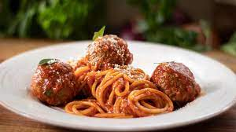

Spaghetti and Meatballs

Description
A classic Italian dish, one of my favorites to make and eat!
full of sauce and topped with parmesean cheese, with a delicious slice
of garlic bread, its a filling and yummy meal!
Ingredients
Steps
Grab a medium sized pot, and fill it about halfway with water
and bring to a boil on about medium heat
Once water is at a rolling boil add the spaghetti noodles, break them in half
if needed to fit comfortably in the pot and boil for about 5 minutes
Grab a small sauce pan, and put desired amount of marinara sauce